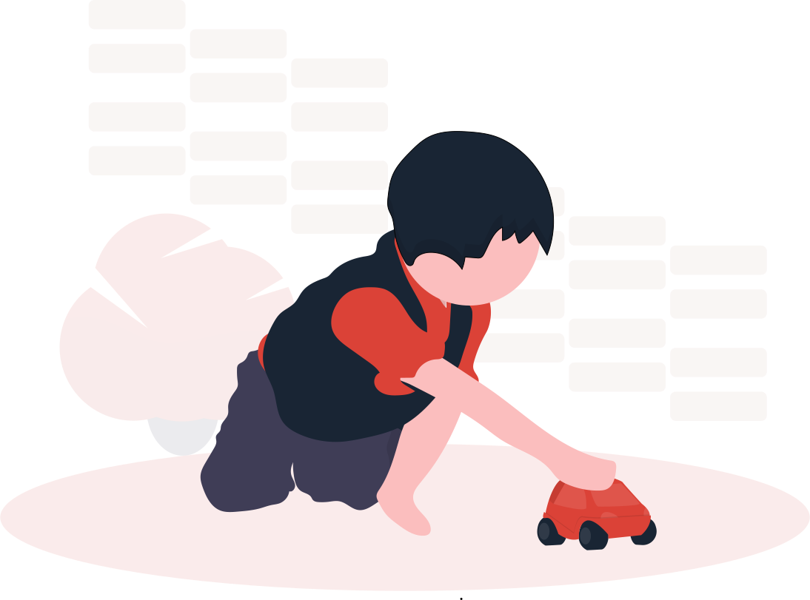
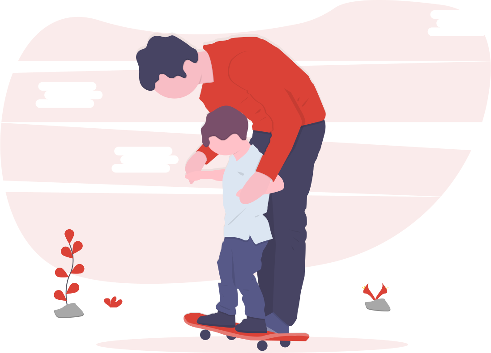

Deteksi
Stunting
Sejak Dini
Beranda
Artikel
Cek Stunting
Kontak
Tentang

Cek
Stunting
Online
Cegah
sebelum menjadi
masalah
!
Nama Anak
Jenis Kelamin
Laki-Laki
Perempuan
Tanggal Lahir
Berat Badan
Tinggi Badan
Cek Hasil

Hasil
Cek Stunting
Indikasi
Nama Anak
-
Jenis Kelamin
-
Umur
-
Berat Badan
-
(-)
Berat Badan
-
(-)
Anjuran Cakupan Gizi dan Nutrisi
Item pertama
Item kedua
Item ketiga